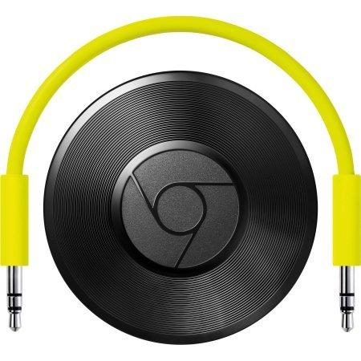
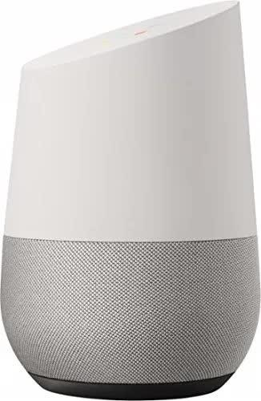
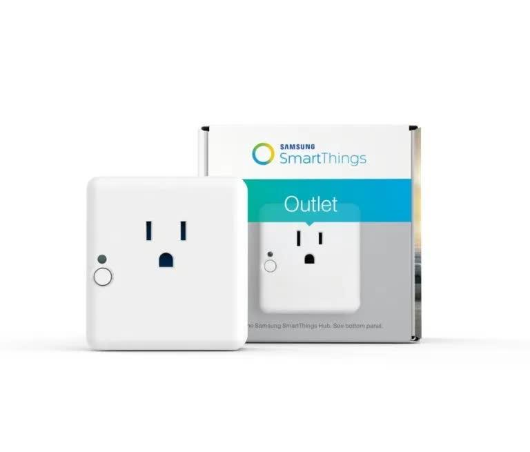

"Ok Google: Play Music on the Jukebox"
Intro

I recently picked up an AMI R-89 jukebox. It is a combo unit, plays both 45 rpm records and CDs. It looked to be in full working order, was full of music, and only $400. I have always wanted a jukebox, but I also wanted to be able to easily play any music through it. I’ve found a way, and it feels like the future!
CD Player
In order to play CDs, the jukebox comes with a Philips 6-disc CD player. It has RCA audio outputs, and also has a few control wires so the jukebox controller board can tell the player which track to play. My first attempt to play my own music was just to put my own CDs in the player, but (I think) because the CD player had not been used for a long time, it was constantly skipping and freezing up.
Headphone to RCA
I unplugged the RCA outputs from the CD player, and hooked up a 3.5MM headphone to RCA cable. This let me then plug my iPhone in and try to play music through it. It worked, with one major caveat: the amplifier is muted unless it is told by the jukebox that 1) a record is playing or 2) a CD is playing. Because neither of those things were happening, no sound comes through the speakers. This is easy to get around, temporarily, by just telling the jukebox to play a CD track. This only works until that song is over, then the amplifier mutes again.
Wiring Diagrams and Cutting the Orange Wire
By complete luck, the jukebox came with a 3-ring binder full of manuals. Inside one of the books is a step-by-step breakdown of what happens inside the jukebox when a selection is made. Following this, I found that the amplifier is constantly being sent a mute signal on one wire. When a song is playing, there is no signal sent through that wire. That then tells the amplifier to un-mute so we can hear the song. This seemed almost backwards to me, but it’s actually perfect. All I needed to do was cut that mute wire, and the amplifier is then always un-muted. This isn’t perfect, there is a slight hum when nothing is playing, but I can live with that.
Worked Great for 20 Minutes
The above setup was awesome, until 20 minutes in when the jukebox would automatically choose a record to play. It has an “Autoplay” setting, and after 20 minutes of inactivity (because the jukebox has no idea that the iPhone is playing music) it will choose a song at random. Fortunately, again using the manuals, I found a Programming Guide that allowed me to completely disable the Autoplay feature.
Chromecast Audio

The iPhone worked well, but any time a text message or phone call would come in, the music would pause. It also just looked ugly, either the jukebox needed to be open or the iPhone shoved inside to work. I decided to pick up a Google Chromecast Audio. We have a couple of regular Chromecasts in the house, but didn’t have any of the audio-only versions. It plugs into power inside the jukebox, where the CD player used to go. This means that the jukebox still only has 1 power cord coming out of it. The Chromecast Audio uses WiFi, so it was extremely easy to set up. I named it “Jukebox” and could then stream Spotify from my iPhone to it. This was much easier than needing to leave my phone inside the jukebox.
"Ok, Google"

I received a Google Home for Christmas, and it tied this project up into the perfect bow. Because the Home has built-in Google Cast support, I can simply say “Ok, Google, play music on the jukebox” and a few seconds later the jukebox starts playing music. The cool part about the Google Cast/Home ecosystem is that they don’t lock you into their music provider. I was able to connect my Home to my Spotify Premium account, and the Home then knows to use it for music. You don’t have to say “Play music from Spotify”, just “Play music”. It feels very natural. The other benefit is that you can do all of this from your phone or computer, Spotify has great Google Cast support. The Google Home “hands-free” part is just icing on the cake!
Next Step, Maybe

Time will tell how much I actually use this, but the next step might be to look into plugging the jukebox into one of these new “smart” power plugs. Google Home supports the SmartThings Hub from Samsung, and then I would be able to turn on the jukebox, wait a few seconds for the Chromecast to boot up, and then have it play music, all hands-free. But for now, this current setup is perfect for me.
Outro
This was such a fun (and easy) project. Like I said, I have wanted a jukebox for a long time, and I love that this still looks and works like a normal jukebox (45s still play just fine!) while being able to instantly stream almost any song to it.
Comments
Comments powered by Disqus